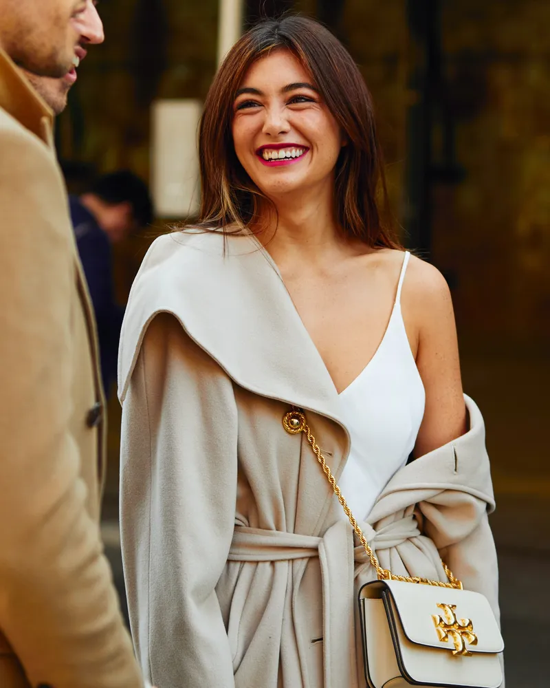
پاییز ۱۴۰۵
پالتوی شتری برای روزهای سرد
پالتوهای بلند و بافتهای گرم با رنگهای کرم و قهوهای؛ برای روزهای سرد پاییز.
شمارهی ۱۲ • پاییز ۱۴۰۵
توی آینه، لباسهای هر فصل و چند پیشنهاد برای ست کردنشون رو میبینید. عکسها رو ببینید و از بین مدلها، چیزی که به سلیقهتون میخوره انتخاب کنید.
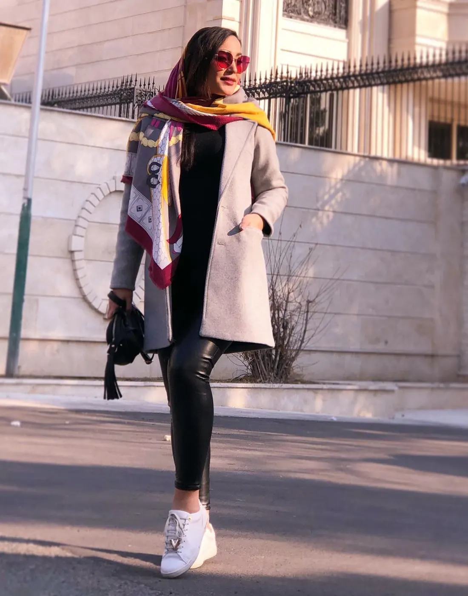
لباسهای هر فصل رو اینجا جمع کردیم. فصل موردنظرتون رو انتخاب کنید.

پاییز ۱۴۰۵
پالتوهای بلند و بافتهای گرم با رنگهای کرم و قهوهای؛ برای روزهای سرد پاییز.
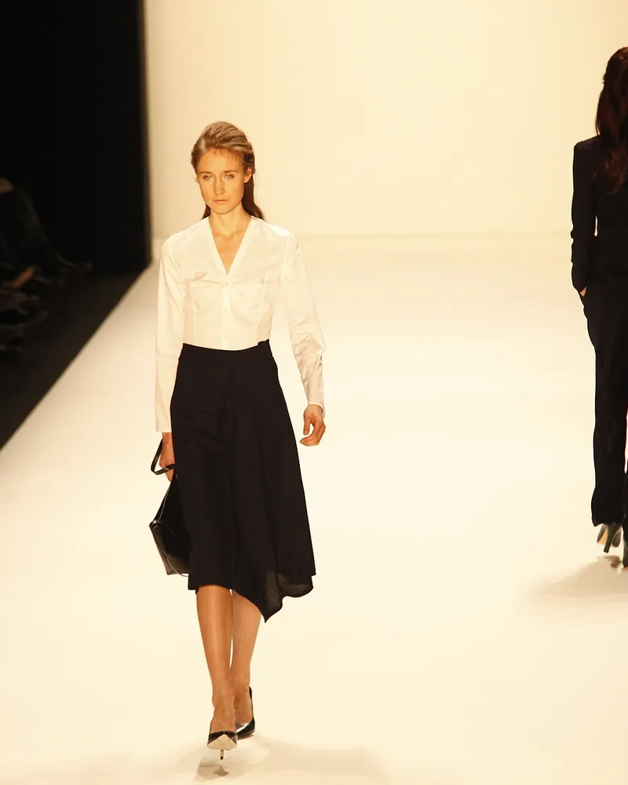
بهار ۱۴۰۶
ده تکه لباس با رنگهای ساده که میتونید با هم ست کنید و هر روز بپوشید.
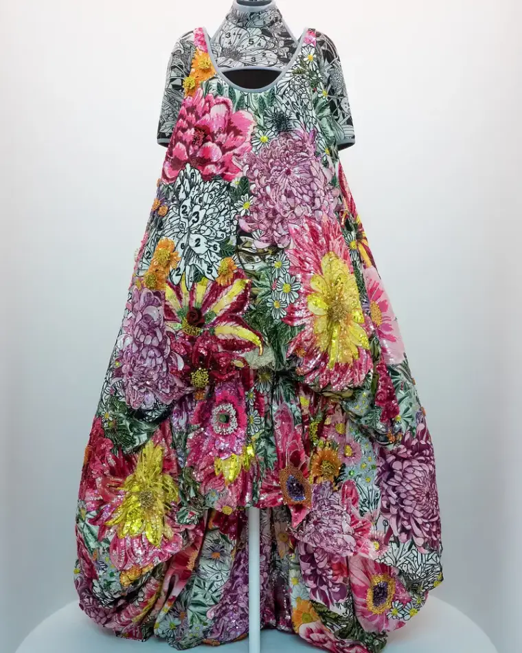
زمستان ۱۴۰۵
لباسهای مجلسی با پارچههای براق و طرحهای گلدار، برای مهمونی و مراسم.
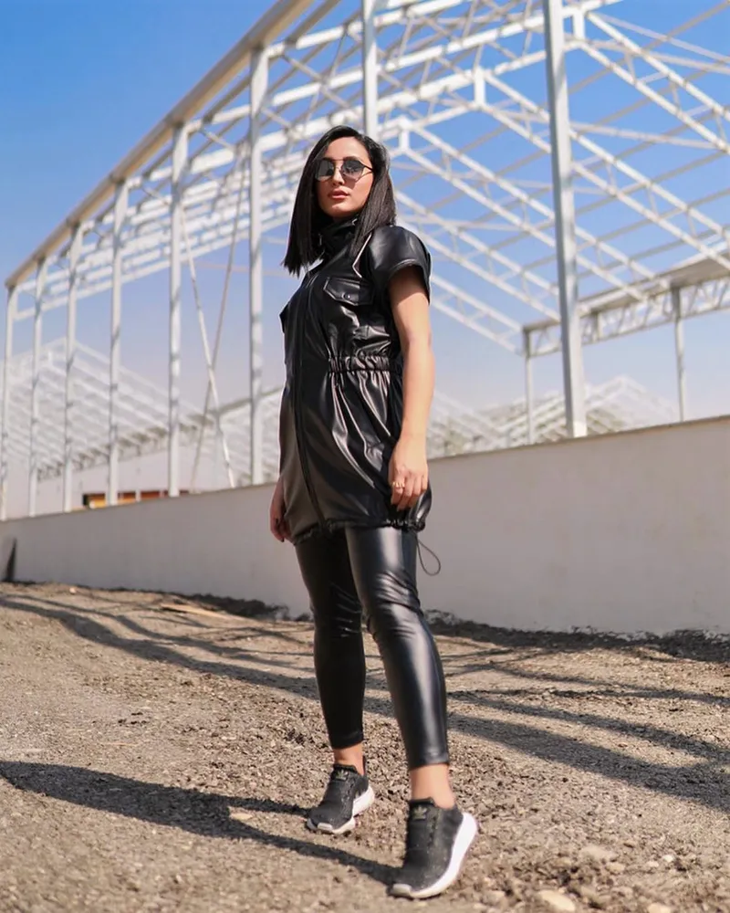
پاییز ۱۴۰۵
چند ترکیب از لباسهای چرم و کتان برای رفتوآمد روزانه و قدم زدن توی شهر.
برای این فصل هنوز مجموعهای نذاشتیم.
عکسهای لباس و استایل خیابونی رو اینجا ببینید. روی هر عکس بزنید تا بزرگتر باز بشه.
مدلهای این فصل رو اینجا معرفی کردیم. اطلاعات هر کدوم کنار عکسش هست.
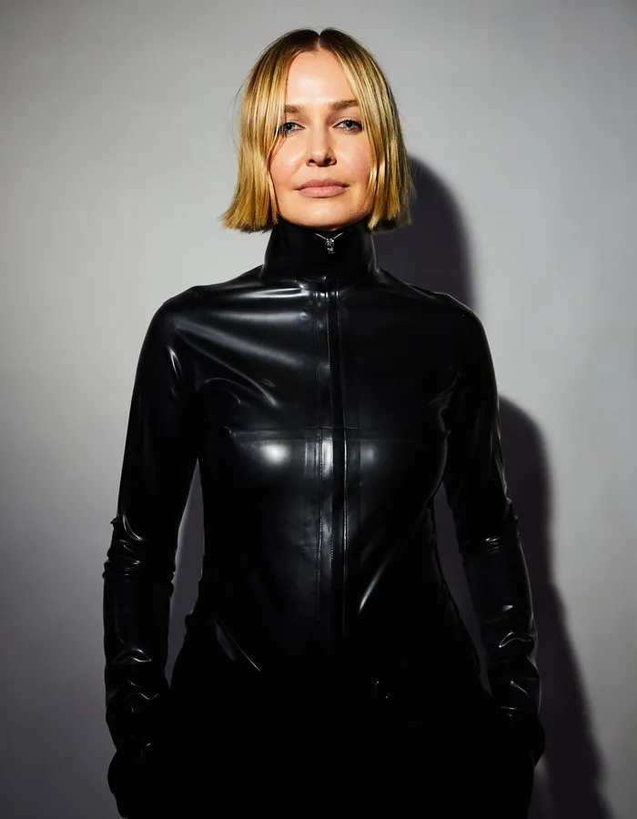
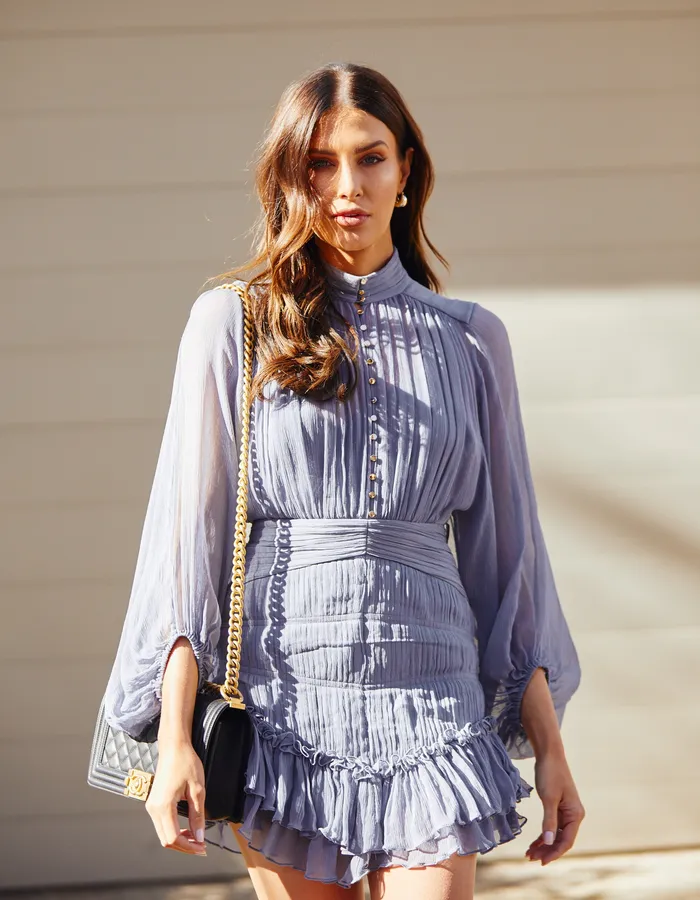
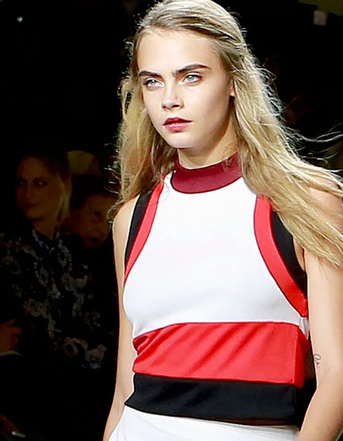
سه پیشنهاد برای لباس روزمره، مهمونی و یه ست ساده.
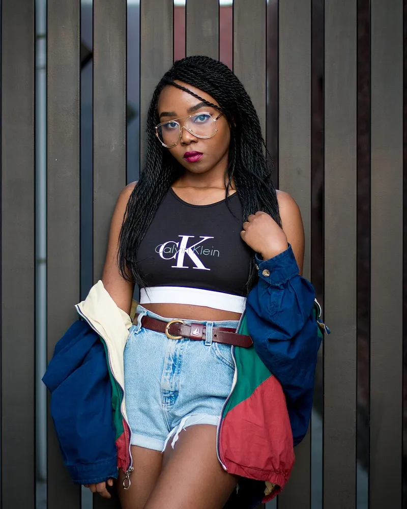
تیشرت، شلوار جین کوتاه و یه کت گشاد رنگی؛ برای بیرون رفتن آخر هفته.
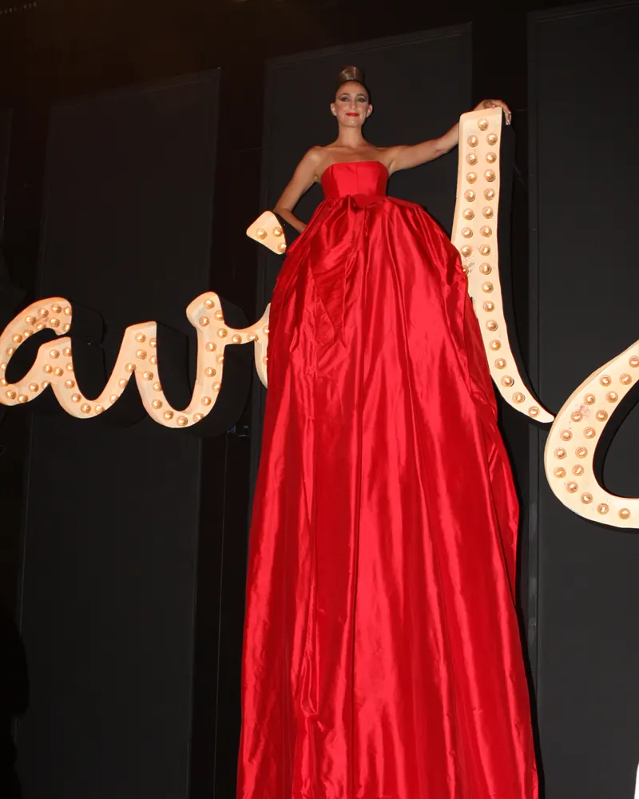
پیراهن بلند قرمز با گوشوارهی ساده و کفش پاشنهبلند مشکی، برای مراسم و مهمونی.
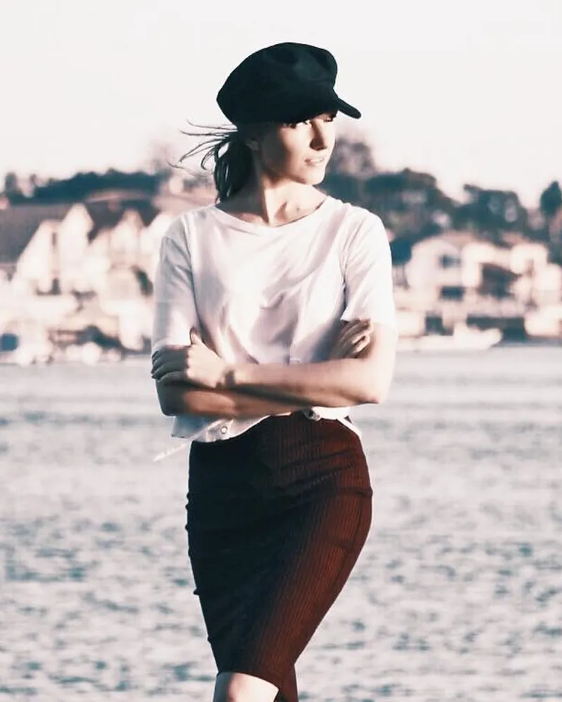
تیشرت سفید، دامن قهوهای و کلاه مشکی. اکسسوریها رو هم با سلیقهی خودتون انتخاب کنید.
چند یادداشت کوتاه دربارهی لباس و ست کردنش.
پالتوی شتری با خیلی از رنگها ست میشه. اینجا چند ترکیب مناسب فصل سرد رو معرفی کردیم.
چطور با چند لباس که به هم میخورن، ستهای مختلف بسازیم و کمد خلوتتری داشته باشیم؟
چند استایل خیابونی از هفتهی مد که میتونید برای لباس روزمره ازشون ایده بگیرید.